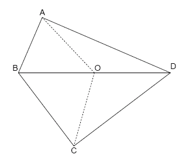

$ABCD$ is a convex, integer sided quadrilateral with $1 \le AB \lt BC \lt CD \lt AD$.
$BD$ has integer length. $O$ is the midpoint of $BD$. $AO$ has integer length.
We'll call $ABCD$ a biclinic integral quadrilateral if $AO = CO \le BO = DO$.
For example, the following quadrilateral is a biclinic integral quadrilateral:
$AB = 19$, $BC = 29$, $CD = 37$, $AD = 43$, $BD = 48$ and $AO = CO = 23$.

Let $B(N)$ be the number of distinct biclinic integral quadrilaterals $ABCD$ that satisfy $AB^2+BC^2+CD^2+AD^2 \le N$.
We can verify that $B(10\,000) = 49$ and $B(1\,000\,000) = 38239$.
Find $B(10\,000\,000\,000)$.
solve(max_limit=10000) → █solve(max_limit=10000000000) → █Solution pending... the mathematician is still thinking.
Nothing here yet - come back when the dust has settled.